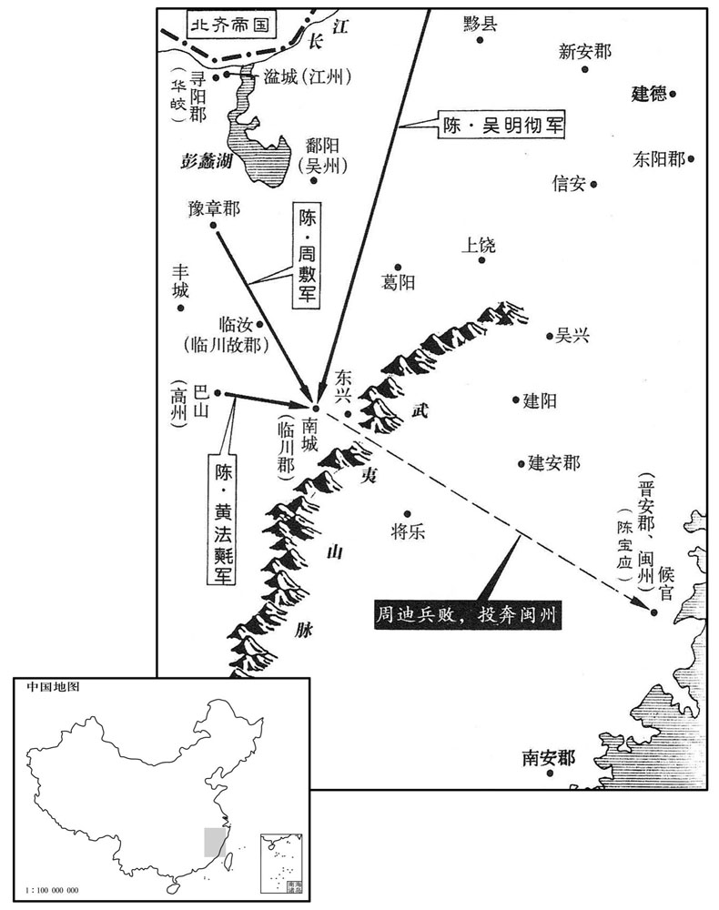

公元562年资治通鉴：本年记事、原文与白话对照
按原书编年位置阅读；追叙和史论不等于本年发生的事件。白话采用所据译本，缺译不以生成译文补齐。
卷168 · 本年记事
公元562年 · 陈世祖文皇帝天嘉三年
三年〔（壬午、五六二）〕
上传原文的注释括号有异常，字符原样保留；无法可靠划分的段落默认全文显示。
本年事件索引（现代整理）
- 北齐武成帝抵达邺城
- 高演抵达邺城，立胡氏为皇后、高纬为太子
- 北周凉景公贺兰祥去世
- 北周在蒲州、同州开凿河渠
- 北周任陈顼为柱国大将军并送其南归
- 陈文帝祭祀南郊、北郊
- 北齐改任高淹、归彦为青州、冀州刺史
- 高归彦恃宠骄横，遭高湛疏远后被迫离开邺城
- 高湛即位后重用和士开，贬斥高元海等人
- 陈文帝征召周迪出镇湓城，周迪拒命并暗中联合留异
- 陈朝封陈宝应父亲为光禄大夫，陈宝应暗中与留异相通
- 虞寄劝谏陈宝应未果，借称病隐居东山寺
- 北齐任任城王高湝为司徒
- 北齐暂停南侵并派崔瞻出使陈朝，王琳与卢潜交恶
- 陈朝废止鹅眼钱，改铸五铢钱
- 后梁宣皇帝萧詧去世，太子萧岿即位
- 安成王陈顼抵达建康，被任为中书监、中卫将军
- 陈文帝以鲁山未归为由试探周使杜杲，杜杲据理应答
- 陈顼妻柳氏及子陈叔宝从北周返回
- 陈朝派吴明彻等讨伐周迪
- 陈朝大赦
- 留异遭侯安都突袭，逃奔晋安依附陈宝应
- 程文季攻下向文政据守的新安
- 北齐武明娄太后去世，高湛仍然饮酒作乐
- 北齐因青州奏报黄河水清而改元河清
- 北周开始将封爵食邑寄食他县
- 北周大赦天下
- 北齐任斛律光为尚书令
- 北周任杨忠为大司空、尉迟迥为大司马
- 陈朝为太子伯宗纳王氏为妃
- 高归彦在冀州谋反，段韶、娄叡率军讨伐
- 高归彦被俘后遭押送邺城处死，其家属也被杀
- 高湛将高归彦家人赏赐给高岳家
- 高湛抵达晋阳，改组北齐朝廷官职
- 陈朝派使者出使北齐
- 发生日食
- 陈朝任到仲举为尚书右仆射、丹杨尹
- 吴明彻攻打周迪不克，陈顼奉诏接替
- 陈文帝下诏削减皇室及百官开支
- 北周任宇文招为益州总管
- 北齐派封孝琰出使陈朝
- 高湛从晋阳返回邺城
- 高湛逼迫昭信李后，杀其子绍德并将李后送入寺院为尼
春，正月，乙玄，齐主至邺；〔自晋阳宫至邺。〕辛巳，祀南郊；壬午，享太庙；丙戌，立妃胡氏为皇后，子纬为皇太子。〔纬，于贵翻。〕后，魏兖州刺史安定胡延之之女也。戊子，齐大赦。己亥，以冯翊王润为尚书左仆射。
春季，正月，乙亥（疑误），北齐国主武成帝到了邺城。辛巳（疑误），在南郊祭天。壬午（疑误），献祭品于太庙。丙戌（疑误），立妃子胡氏为皇后，儿子高纬为皇太子。皇后是魏国兖州刺史安定人胡延之的女儿。戊子（疑误），北齐大赦天下。己亥（疑误），任命冯翊王高润为尚书左仆射。
周凉景公贺兰祥卒。〔凉国公。景，谥也。〕
北周凉景公贺兰祥病逝。
壬寅，周人凿河渠于蒲州，龙首渠于同州。〔二渠皆以灌溉。〕
壬寅（初一），北周在蒲州开凿河渠，在同州开凿龙首渠。
丁未，周以安成王顼为柱国大将军，遣杜杲送之南归。〔考异曰：典略作「杜果」，今从周书。〕
丁未（初六），北周任命安成王陈顼为柱国大将军，派杜杲送他回南方。
辛亥，上祀南郊，以胡公配天；〔胡公始封于陈，故郊祀之以配天。〕二月，辛酉，祀北郊。
辛亥（初十），陈文帝在南郊祭天，同时也配祭胡公。二日辛酉（疑误），在北郊祭地。
闰门，丁未，齐以太宰、平阳王淹为青州刺史，太傅、平秦王归彦为太宰、冀州刺史。
闰月，丁未（疑误），北齐任命太宰、平阳王高淹为青州刺史，太傅、平秦王高归彦为太宰、冀州刺史。
归彦为肃宗所厚，〔归彦以杀杨、燕之功，为肃宗所厚。〕恃势骄盈，陵侮贵戚。世祖即位，侍中．开府仪同三司高元海、御史丞毕义云、黄门郎高干和数言其短，〔数，所角翻。〕且云：「归彦威权震主，必为祸乱。」帝亦寻其反复之迹，渐忌之，〔归彦始为文宣所亲任。其后背杨愔，附孝昭，以成济南之祸，又为孝昭所委信。孝昭既殂，又迎武成以贪天之功，故武成迹其反复而忌之。〕伺归彦还家，召魏收于帝前作诏草，除归彦冀州，〔伺，相吏翻。〕使干和缮写；昼日，仍敕门司不听归彦辄入宫。时归彦纵酒为乐，经宿不知。至明，欲参，〔参，朝参也。毛晃曰：参，造也，趋承也。乐，音洛。〕至门知之，大惊而退。及通名谢，敕令早发，别赐钱帛等物甚厚，又敕督将悉送至清阳宫。〔齐有别宫在清淇之阳，因以为名。五代志，清河郡清阳县，旧曰清河县，后齐省贝丘入焉，改为贝丘，隋开皇六年改为清阳。将，即亮翻。〕拜辞而退，莫敢与语，唯赵郡王叡与之久语，时无闻者。
高归彦受到北齐孝昭帝的厚待，依恃权势，十分骄横，对贵戚高官随意凌辱。北齐武成帝即位后，侍中、开府仪同三司高元海，御史中丞毕义云，黄门郎高乾和多次陈说他的短处，而且说：“高归彦威权太重，震动天子，必定会成为祸乱之源。”武成帝也寻究他反覆无常的劣迹，便渐渐地对他猜忌起来。一天，乘着高归彦回家去了，武成帝把魏收叫来起草诏书，任命高归彦为冀州刺史，最后让高乾和抄写。天亮后，仍然敕令管门的不放高归彦随便入宫。当时高归彦在家里纵酒寻欢作乐，整宿酣饮，什么也不知道。到天亮想入朝参见皇帝，到宫门口才知道事情有变，自己已被派往冀州了，这才大惊失色，退了回去。高归彦通报了姓名要向皇帝谢恩，这时宫中又传出敕令，让他早点出发去上任，另外又赏赐了他很多钱帛财物，又敕令督将全部为他送行送到清阳宫。高归彦拜辞之后退了下来，没有人敢和他搭话，只有赵郡王高睿和他说了很久，当时没人听到他们说了什么。
帝之为长广王也，清都和士开以善握槊、弹琵琶有宠，辟为开府行参军，及即位，累迁给事黄门侍郎。高元海、毕义云、高干和皆疾之，将言其事。士开乃奏元海等交结朋党，欲擅威福，干和由是被疏。〔被，皮义翻。〕义云纳赂于士开，得为兖州刺史。〔为和士开怙宠乱齐张本。〕
北齐武成帝还当长广王的时候，清都人和士开因为善于使槊、善于弹琵琶而得到长广王的恩宠，被征召来当了开府行参军。待到长广王即位为帝，和士开多次升迁，已经做到给事黄门侍郎了。高元海、毕义云、高乾和都讨厌他，准备有机会就告发他的劣迹。和士开先下手为强，就向武成帝汇报高元海等人互相勾通，结为朋党，想垄断政权，以便作威作福，高乾和从此被武成帝疏远了。毕义云向和士开进纳贿赂，得到了兖州刺史的职务。
帝征江州刺史周迪出镇湓城，〔周迪领江州刺史而屯据临川，征之镇湓城，若以江州授之者。〕又征其子入朝。〔朝，直遥翻；下同。〕迪趑且顾望，并不至。〔趑，子移翻。且，七余翻。趑趄，不进之貌。〕其余南江酋帅，私署令长，多不受召，〔酋，慈秋翻。帅，所类翻。长，知两翻。〕朝廷未暇致讨，但羁縻之。豫章太守周敷独先入朝，进号安西将军，给鼓吹一部，赐以妓、金帛，令还豫章。〔周敷先与周迪分据临川，既破熊昙朗，敷移据豫章。吹，尺瑞翻。妓，渠绮翻。〕迪以敷素出己下，深不平之，乃阴与留异相结，遣其弟方兴〔【章：十二行本「兴」下有「将兵」二字；乙十一行本同；张校同云无注本亦无。】〕袭敷；敷与战，破之。又遣其兄子伏甲船中，诈为贾人，欲袭湓城。〔贾，音古。〕未发，事觉，寻阳太守监江州事晋陵华皎遣兵逆击之，尽获其船仗。〔监，工衔翻。〕
陈文帝征召江州刺史周迪出镇湓城，又征召他的儿子进朝廷。周迪趄观望，父子两人都不肯动身。其余南江的各位酋长，都私自代理地方官，也大多不接受朝廷征召，朝廷腾不出手来讨伐，只是对他们采取笼络安抚政策。豫章太守周敷率先受召进朝，朝廷便给了他一个安西将军的封号，给了他一队鼓吹乐队，还赐给他艺妓、金帛，让他还回豫章去。周迪因为周敷一直比自己地位低，而现在受封，所以深感不平，于是暗地里和留异相勾结，派他弟弟周方兴带兵去攻打周敷，周敷与之交战，把周方兴打败了。周迪又派他哥哥的儿子埋伏兵士于船中，假称是商人，想袭击湓城。但还没动手，事情就暴露了，寻阳太守监江州事晋陵人华皎派兵去迎击，把周迪方面的船只兵器全缴获了。
上以闽州刺史陈宝应之父为光禄大夫，〔五代志：建安郡，陈置闽州。陈宝应父，羽。〕子女皆受封爵，命宗正编入属籍。而宝应以留异女为妻，阴与异合。
陈文帝任命闽州刺史陈宝应的父亲为光禄大夫，陈宝应的子女也都封爵，而且命令宗正把他们的名字编入官府名册。但陈宝应娶了留异的女儿为妻，因此暗地里和留异合作。
虞荔弟寄，流万闽中，荔思之成疾，上为荔征之，宝应留不遣。寄尝从容讽以逆顺，〔为，于伪翻。从，千容翻。〕宝应辄引他语以乱之。宝应尝使人读汉书，卧而听之，至蒯通说韩信曰：「相君之背，贵不可言。」蹶然起坐，曰：「可谓智士！」寄曰：「通一说杀王士，何足称智！，〔班固曰：蒯通一说而丧三儁。应劭注云：谓烹郦生败田横，骄韩信也。说，式芮翻。相，息亮翻。〕岂若班彪王命，识所归乎！」〔王命论，见四十一卷汉光武建武五年。〕
虞荔的弟弟虞寄，寄居在闽中，虞荔因思念他而病了。陈文帝为虞荔特地向闽中征召虞寄回朝，但陈宝应把人扣着不放。虞寄曾经在闲谈中对陈宝应劝谕叛逆和归顺何去何从的道理，但陈宝应一听就把话头引开，打乱虞寄的话。陈宝应曾经让人为他读《汉书》，自己躺着听，当听到蒯通游说韩信时说的话“看你后背的形状，骨相极贵，几乎不便说出”之时，突然坐起来，感叹说：“真可称为智士了！”虞寄在一边说：“蒯通这一番游说，造成了郦生被烹、田横失败、韩信骄纵亡身的后果，杀害了三个才俊之士，有什么足以称为智士的呢？这哪比得上班彪在《王命论》中能理解何去何从呢！”
寄知宝应不可谏，恐祸及己，乃着居士服，〔着，陟略翻。〕居东山寺，阳称足疾。宝应使人烧其屋，寄安卧不动。亲近将扶之出，寄曰：「吾命有所悬，避将安往！」〔言托迹闽中，生死之命，悬于人手，无所避之也。〕纵火者自救之。
虞寄深知陈宝应是劝谏不过来了，担心灾祸降到自己身上，于是就穿上隐居不仕的士人服装，住进了东山寺，假称是脚上有毛病。陈宝应派人去烧他所住的房子，虞寄安然躺卧在那儿，一动也不动。身边亲近的人要扶他出来，虞寄说：“我的生命悬在人家手里，躲避了火烧，又能再躲到哪儿去呢？”结果是放火的人自己把他救出来了。
乙卯，齐以任城王湝为司徒。〔任，音壬。湝，户皆翻。〕
北齐任命任城王高为司徒。
齐扬州刺史行台王琳数欲南侵，尚书卢潜以为时事未可。上遣移书寿阳，欲与齐和亲。潜以其书奏齐朝，仍上启请且息兵。〔数，所角翻。上，时掌翻。朝，直遥翻。〕齐主许之，遣散骑常侍崔瞻来聘，且归南康愍王昙朗之丧。〔昙朗为齐所杀，见一百六十六卷梁敬帝太平元年。〕琳于是与潜有隙，更相表列。〔更，工衡翻。〕齐主征琳赴邺，以潜为扬州刺史，领行台尚书。瞻，嵶之子也。〔高欢起兵于信都崔嵶为参佐。嵶，力膺翻。〕
北齐扬州刺史行台王琳多次想向南进犯，尚书卢潜认为时机未到，不可轻举妄动。陈文帝派人送书信到寿阳，想与北齐和好亲近。卢潜把信呈奏了北齐，仍然启请武成帝允许息兵，武成帝同意了，派散骑常侍崔瞻来陈朝聘问，并把南康愍王陈昙朗的遗体送还给陈朝。王琳从此与卢潜产生了嫌隙，相互之间总是争执不已。武成帝征召王琳到邺城去，任命卢潜为扬州刺史，领行台尚书。崔瞻是崔的儿子。
梁末丧乱，铁钱不行，〔梁普通中铸铁钱。丧，息浪翻。〕民间私用鹅眼钱。甲子，改铸五锺钱，一当鹅眼之十。〔考异曰：隋志在天嘉五年。今从陈帝纪。〕
梁朝末年政败国乱，铁钱不再流通。民间私自流通着鹅眼钱。甲子（二十四日），改铸五铢钱，一枚五铢钱可兑换十枚鹅眼钱。
后梁主安于俭素，不好酒色，〔好，呼到翻。〕虽多猜忌，而抚将士有恩。以封疆褊隘，邑居残毁，干戈日用，郁郁不得志，疽发背而殂；〔年四十四。〕葬平陵，谥曰宣皇帝，庙号中宗。太子岿即皇帝位，〔岿，字仁远，宣帝之第三子也。岿，音归，又区胃翻。〕改元天保；尊龚太后为太皇太后，王后曰皇太后，母曹贵嫔为皇太妃。〔嫔，昆宾翻。〕
后梁国主习惯于节俭朴素，不好酒色，虽然性多猜忌，但却能体贴将士，广施恩惠。因为国家疆土狭小偏僻，老百姓的住所破败，干戈不断，所以总是郁郁不得志，终于因背疽发作而死，葬在平陵，谥号为宣皇帝，庙号中宗。太子萧岿即皇帝位，改年号为天保，尊龚太后为太皇太后，王皇后为皇太后，母亲曹贵嫔为皇太妃。
二〔【章：十二行本「二」作「三」；乙十一行本同；张校同。】〕月，丙子，安成王顼至建康，诏以为中书监、中卫将军。
三月，丙子（初七），安成王陈顼到达建康，陈文帝下诏封他为中书监、中卫将军。
上谓杜杲曰：「家弟今蒙礼遣，实周朝之惠；然鲁山不返，亦恐未能及此。」〔言若不赂以鲁山，亦恐不及遣安成王还也。朝，直遥翻；下同。〕杲对曰：「安成，长安一布衣耳，而陈之介弟也，〔介，大也。〕其价岂止一城而已哉！本朝敦睦九族，怒己及物，上遵太祖遗旨，下思继好之义，〔好，呼到翻。〕是以遣之南归。今乃云以寻常之土易骨肉之亲，非使臣之所敢闻也。」〔使，疏吏翻。〕上甚惭，曰：「前言戏之耳。」待杲之礼有加焉。
陈文帝对杜杲说：“我弟弟现在承蒙你们以礼相待送回来了，这实在是周朝的恩惠，然而我们要是不奉送鲁山城，你们恐怕也不会这样做的。”杜杲回答说：“安成王，不过是长安的一个布衣百姓，但却是陈朝皇帝的弟弟，他的价值岂止一座城池而已！我们周朝一向和亲族和睦相处，推己及人地讲求忠恕之道，上遵太祖之遗旨，下思永远和好人信义，因此才把安成王送回南方。现在您却说是用寻常的土地换回了骨肉至亲，这可不是我所能同意的。”陈文帝听了很觉惭愧，只好自我嘲解地说：“刚才说的是玩笑话。”接待杜杲的礼节超过了常规。
顼妃柳氏及子叔宝犹在穰城，上复遣毛喜如周请之，〔顼，吁玉翻。复，扶又翻。〕周人皆归之。
陈顼的妃子柳氏和儿子陈叔宝还滞留在穰城，陈文帝又派毛喜到北周去请求放还，北周把他们都送回来了。
丁丑，以安右将军吴明彻为江州刺史，督高州刺史黄法鳓、〔鳓，巨俱翻。〕豫章太守〔守，式又翻。〕周敷共讨周迪。
丁丑（初八），陈朝任命安右将军吴明彻为江州刺史，指挥高州刺史黄法氍、豫章太守周敷一起去讨伐周迪。

甲申，大赦。
甲申（十五日），陈朝大赦天下。
留异始谓台军必自钱塘上，既而侯安都步由诸暨出永康，〔上，时掌翻。请暨县，自汉以来属会稽郡。永康县，吴赤乌八年，分上虞、乌伤立，属东阳郡。自永唐至东阳一百九里。〕异大惊，奔桃枝岭，于岩口竖栅以拒之。〔竖，而主翻。〕安都为流矢所中，血流至踝，〔中，竹仲翻。踝，胡瓦翻，足跟也。〕乘轝麾，容止不变。因其山势，迮而为堰，〔迮，侧百翻，迫也。堰，于建翻。〕会潦水涨汉，安都引船入堰，起楼舰与异城等，发拍碎其楼堞。〔潦，卢皓翻。舰，户黯翻。堞，达协翻。〕异与其子忠臣脱身奔晋安，依陈宝应。安都虏其妻及余子，尽收铠仗而还。〔铠，可亥翻。还，从宣翻又音如字。〕
留异开头认为朝廷军队一定会从钱塘江溯江而上，后来侯安都却从陆路经由诸暨兵发永康，留异大吃一惊，奔逃到桃枝岭，在山谷的入口处竖起栅栏进行防御。侯安都在进攻时被飞箭射中，鲜血一直流到脚踝处，但他坐在车子上指挥士兵，神色举止一点也不变。侯安都又依着山势，贴着山根修起了石堰，正好赶上下大雨，雨水涨满了堰坝，侯安都把船只开入堰内，造成楼房式的高层船舰，和留异修的城垣一般高，坐在船上的士兵使用攻坚器械，击碎了留异城上的墙堞。留异和他的儿子留忠臣脱身而逃，到晋安去投靠了陈宝应。侯安都俘获了留异的妻子和其余的儿子，把他的铠甲兵器尽数收缴，得胜回朝。
异党向文政据新安，上以贞毅将军程文季为新安太守，〔梁置贞毅将军，班第二十二，在五德将军之下；陈制，拟官品第五。〕帅精甲三百轻往攻之。文政战败，遂降。文季，灵洗之子也。〔陈氏建国，程灵洗、萧摩诃等俱为为健将。帅，读曰率。降，户江翻。〕
留异的同党向文政占据着新安，陈文帝任命贞毅将军程元季为新安太守，率领精兵三百名轻装前行，去袭击向文政。向文政战败，于是就投降了。程文季是程灵洗的儿子。
夏，四月，辛丑，齐武明娄太后殂。齐主不改服，绯袍如故。未几，〔未几，言未几时也。几，居岂翻。〕登三台，置酒作乐，宫女进白袍，帝投诸台下。散骑常侍和士开请止乐，帝怒，挝之。〔和士开长君之恶者也，自此益无所忌惮矣。〕
夏季，四月，辛丑（初二），北齐武明娄太后去世。北齐国主武成帝不改换服装，仍然象往常一样穿着红色袍服。不久，武成帝又登上三台，摆酒崐奏乐，宫女给他送来了白袍子，但他却把它扔到了台下。散骑常侍和士开请求停止奏乐，武成帝勃然大怒，打了他。
齐青州上言河水清，齐主遣使祭之，改元河清。
北齐青州地方官启奏说黄河水变清了，武成帝派使者去祭黄河，并改换年号为河清。
先是，周之君〔【章：十二行本「君」作「群」；乙十一行本同。】〕臣受封爵者皆未给租赋。〔先，悉荐翻。〕癸亥，始诏柱国等贵臣邑，户听寄食他县。
早先，北周的群臣受封爵时都没有给他们邑地的租赋。癸亥（二十四日），才开始下诏规定柱国等享受采邑的贵臣，可以寄食于别的县。
五月，庚午，周大赦。
五月，庚午（初一），北周大赦天下。
己丑，齐以右仆射斛律光为尚书令。
己丑（二十日），北齐任命右仆射斛律光为尚书令。
壬辰，周以柱国杨忠为木司空。六月，己亥，以柱国蜀国公尉迟迥为大司马。〔尉，纡勿翻。〕
壬辰（二十三日），北周任命柱国杨忠为大司空。六月，己亥（初一），任命柱国蜀国公尉迟迥为大司马。
秋，七月，己丑，纳太子妃王氏，金紫光禄大夫周之女也。〔姚思廉陈书「周」作「固」。〕
秋季，七月，己丑（二十一日），陈朝为太子娶妃子王氏。王氏是金紫光禄大夫王周的女儿。
齐平秦王归彦至冀州，内不自安，欲待齐主如晋阳，乘虚入邺。其郎中令吕思礼告之。〔此王国郎中令也。〔诏大司马段韶、司空娄叡讨之。归彦于南境置私驿，闻大军将至，即闭城拒守。长史宇文仲鸾等不从，皆杀之。归彦自称大丞相，有众四万。齐主以都官尚书封子绘冀州人，祖父世为本州岛刺史，得人心，〔子绘父隆之，祖回，皆为冀州刺史。〕使乘传至信都，〔传，张恋翻。〕巡城，谕以祸福。吏民降者相继，城中动静，小大皆知之。〔降，户江翻。〕
北齐平秦王高归彦到了冀州后，内心很不安定，想等皇帝去晋阳时，乘虚打入邺城。他手下的郎中令吕思礼告发了他。武成帝下诏派大司马段韶、司空娄睿去讨伐他。高归彦在南边设置了私人驿站以打听消息，听说朝廷大军将到，便关上城门固守抵抗。长史宇文仲鸾等人不服从，都被杀掉了。高归彦自称大丞相，有军队四万人。武成帝考虑到都官尚书封子绘是冀州人，祖父、父亲世代为冀州刺史，很得人心，就派他乘驿马到了信都。封子绘到信都之后，一边巡视城池，一边对城中吏民晓谕避祸趋福的道理。官吏和民众相继跑出来投降。城里有什么动静，都有人报告，大事小事全都知道。
归彦登城大呼云：〔呼，火故翻。〕「孝昭皇帝初崩，六军百万，悉在臣手，投身向邺，奉迎陛下。掌时不反，今日岂反邪！正恨高元海、毕义云、高干和诳惑圣上，疾忌忠良，但为杀此三人，〔诳，居况翻。为，于伪翻。〕即临城自刎。」〔刎，扶粉翻。〕既而城破，单骑走，至交津，获之，〔水经注：衡漳水径武邑郡南，又东径武强县北，又东北径武隧县故城南、白马河注之。水上承呼沱，东径乐乡县北，饶阳县南，又东南径武邑郡此，而东入衡漳水，谓之交津口。〕销送邺。乙未，载以露车，衔木面缚。〔李百药北齐书，「衔木」作「衔枚」。〕刘桃枝临之以刃，击鼓随之，并其子孙十五入皆弃市。命封子绘行冀州事。
高归彦登上城头大声呼叫说：“孝昭皇帝刚驾崩时，六路兵马百万余人，都在我手中控制着。我投身到邺城去，奉迎陛下来就皇位。当时我都没有造反。今日我这样做，是被逼的，难道是造反吗？我恨的是高元海、毕义云、高乾和欺骗迷惑皇上，忌恨忠良，只要杀了这三个人，我就在城头自刎以谢天下。”不久城被攻破，高归彦单人匹马向北逃窜，逃到交津时，让抓住了，被用锁链锁上送到了邺城。乙未（二十七日），他被装在没有帷盖的车上，嘴里衔着木棍，被反绑着。刘桃枝用刀刃比试着他，后面还有人击鼓跟随，高归彦连同他的子孙十五人全部斩首，弃尸市上。朝廷下令封子绘管理冀州事务。
齐主知归彦前谮清河王岳，〔事见一百六十六卷梁敬帝绍泰元年。〕以归彦家良贱百口赐岳家，赠岳太师。
武成帝知道高归彦过去陷害过清河王高岳，便把高归彦家里主仆共一百多口人全部赐给了高岳，并赠高岳以太师的称号。
丁酉，以段韶为太傅，娄睿为司徒，平阳王淹为太宰，斛律光为司空，赵郡王睿为尚书令，河间王孝琬为左仆射。
丁酉，以段韶为太傅，娄叡为司徒，平阳王淹为太宰，斛律光为司空，赵郡王叡为尚书令，河间王字琬为左仆射。
癸亥，齐主如晋阳。
两版字句有差异，建议核对原文。
癸亥（疑误），武成帝到了晋阳。
上遣使聘齐。
陈文帝派使者到齐国聘问。
九月，戊辰朔，日有食之。
九月，戊辰朔（初一），发生日食。
以侍中、都官尚书到仲举为尚书右仆射、丹杨尹。仲举，溉之弟子也。〔到浪，彦之之会孙，梁初以文学显，以廉白称。〕
陈朝任命侍中、都官尚书到仲举为尚书右仆射、丹杨尹。到仲举是到溉的弟弟的儿子。
吴月彻至临川攻周迪，不能克。丁亥，诏安成王顼代之。〔考异曰：陈书帝纪云：丁亥，迪请降，诏安成王讳督众军似招纳之。令从南史迪传。〕
吴明彻到临川去攻打周迪，不能取胜。丁亥（二十日），陈文帝下诏让安成王陈顼去代替他。
冬，十月，戊戌，诏以军旅费广，百姓空虚，凡供乘舆饮食衣服及宫中调度，悉从减削；〔乘，绳证翻。调，徒钓翻。〕至于百司，宜亦思省约。
冬季，十月，戊戌（初二），陈文帝诏令，由于军费开支浩大，老百姓很穷困，所以凡是皇上的车桥饮食衣服以及宫中的日常费用，一概削减。至于朝廷各部门，也应该想到节约。
十一月，丁卯，周以赵国公招为益总管。
十一月，丁卯（初一），北周任命赵国公宇文招为益州总管。
丁丑，齐遣兼散骑常侍封孝琰来聘。
丁丑（十一日），北齐派兼散骑常侍封孝琰到陈朝聘问。
十二月，丙辰，齐主还邺。〔自晋阳还邺。〕
十二月，丙辰（二十一日），武成帝从晋阳回到邺城。
齐主逼通昭信李后，〔文宣李后，宫曰昭信。〕曰：「若不从我，我杀尔儿。」后惧，从之。既而有娠。太原王绍德至合，不得见，〔见，贤遍翻。〕愠曰：「儿岂不知邪！姊腹大，故不见儿。」后大惭，由是生女不举。帝横刀诟曰：〔诟，许候翻。〕「杀我女，我何得不杀尔儿！」对后以刀环筑杀绍德。后大哭。帝愈怒，裸后，乱挝之。后号天不已，帝命盛以绢囊，〔号，户刀翻。盛，时征翻。〕流血淋漉，投诸渠水，良久乃苏，犊车载送妙胜寺为尼。〔武成之淫虐，文宣教之也。是以诗贵正始。〕
武成帝逼着要和昭信李后通奸，说：“如果不服从我，我就杀了你儿子！”李后害怕了，就屈从了他。不久李后怀了孕。太原王高绍德入宫到了门口，见不到李后，便生气地说：“孩儿我难道不知道吗？娘是肚子大了，所以才不出来见儿子。”李后十分惭愧，因此生下了女儿后便弄死了。武成帝横提着刀大骂：“你杀了我的女儿，我为什么不杀你儿子！”便当着李后用刀砍杀了高绍德。李后大哭失声。武成帝更加愤怒，把李后的衣服剥光，乱打了一气。李后呼天喊地，号哭不断，北齐武成帝命令人把她装在绢袋里，血沥沥拉拉从袋中渗了出来，连人带绢袋扔到渠水中浸泡，过了很久才苏醒过来，便用牛车把她载送到妙胜寺当了尼姑。
译本中未与胡注本可靠对应的内容
以下另列供核对版本差异，不并入胡注本正文。
译本所附古文
[17]乙巳，齐遣使来聘。
译本白话
乙巳（初六），北齐派使者到陈朝聘问。